Everything you see in a manimR scene is a mobject (a mathematical object). This vignette explains how mobjects are built, how to place, transform, style, copy and group them, and then tours every shape in the geometry library. Animating mobjects is the subject of Animations; colors are covered in depth in Colors, images, SVG and point clouds.
Most examples are static pictures drawn with plot(),
which draws one frame on the current graphics device.
plot() works anywhere, including the RStudio Plots pane, so
it is the quickest way to check a layout while you build a scene.
Mobjects, points and families
Points
A mobject stores its geometry in points, an
n x 3 matrix with one point per row. Vectorized mobjects
(VMobjects, the kind almost every shape is) are chains of cubic Bezier
curves, stored four rows per curve: an anchor, two handles and the next
anchor.
sq <- Square(side_length = 2)
sq
#> <Square> 16 points, 0 submobjects
dim(sq$points)
#> [1] 16 3
sq$points[1:4, ] # the first curve: the top edge
#> [,1] [,2] [,3]
#> [1,] 1.0000000 1 0
#> [2,] 0.3333333 1 0
#> [3,] -0.3333333 1 0
#> [4,] -1.0000000 1 0
sq$get_num_curves()
#> [1] 4
sq$get_start_anchors() # the corners
#> [,1] [,2] [,3]
#> [1,] 1 1 0
#> [2,] -1 1 0
#> [3,] -1 -1 0
#> [4,] 1 -1 0A straight edge is a Bezier curve whose handles lie on the segment, which is why the top edge has handles at one third and two thirds of the way. A circle uses eight curves with real handles:
Circle()$get_num_curves()
#> [1] 8
round(Circle()$points[1:4, ], 3)
#> [,1] [,2] [,3]
#> [1,] 1.000 0.000 0
#> [2,] 1.000 0.265 0
#> [3,] 0.895 0.520 0
#> [4,] 0.707 0.707 0Mobject is the base class of everything;
VMobject adds Bezier paths, fill and stroke. You rarely
create either directly, but VMobject() is the starting
point for custom
shapes.
Submobjects and families
A mobject can contain other mobjects, its submobjects. A
mobject together with all its submobjects, their submobjects and so on
is its family. Moving, scaling or coloring a mobject applies to
its whole family. print_family() shows the tree with each
member’s name and id.
eyes <- VGroup(Dot(c(-0.5, 0.4, 0)), Dot(c(0.5, 0.4, 0)))
mouth <- Arc(radius = 0.8, start_angle = PI + 0.6, angle = PI - 1.2, color = YELLOW)
face <- VGroup(Circle(radius = 1.5, color = YELLOW), eyes, mouth)$scale(1.5)
print_family(face)
#> VGroup 46872af6e8d4169d10-10
#> Circle 46872af6e8d4169d10-9
#> VGroup 46872af6e8d4169d10-7
#> Dot 46872af6e8d4169d10-5
#> Dot 46872af6e8d4169d10-6
#> Arc 46872af6e8d4169d10-8
length(face$submobjects)
#> [1] 3
length(face$get_family())
#> [1] 6index_labels() puts a number on each submobject, which
helps when you need to find a part of a complicated mobject such as a
formula. The labels count from 1, as face[i] does. They are
Integer() numbers, typeset with LaTeX by default;
mob_class = Text draws them with a system font instead.
labels <- index_labels(face, mob_class = Text, label_height = 0.45)
plot(VGroup(face, labels))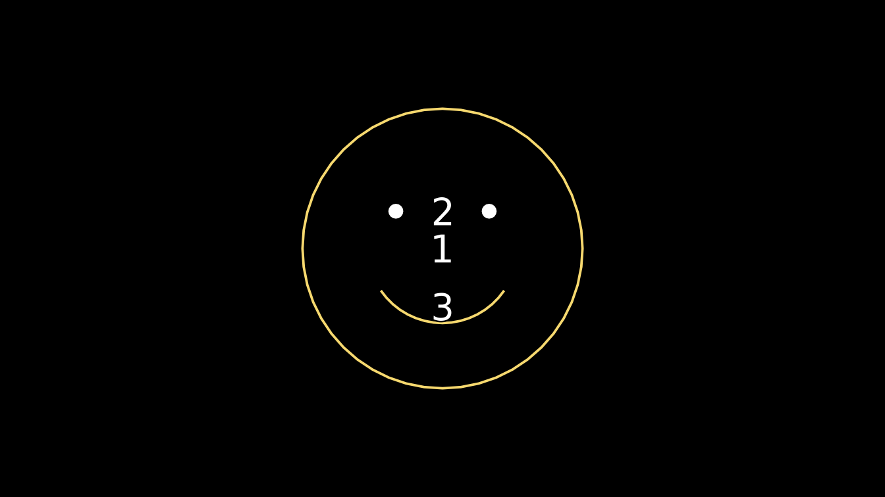
Constructors and generators
Every shape has a constructor function and an R6 class generator.
Circle() is a function that calls
CircleClass$new(): use the function to make mobjects, and
the generator to subclass or to reach class methods.
c1 <- Circle(radius = 1)
c2 <- CircleClass$new(radius = 1)
class(c1)
#> [1] "Circle" "Arc" "TipableVMobject" "VMobject"
#> [5] "Mobject" "R6"
inherits(c1, "Arc")
#> [1] TRUE
CircleClass$classname
#> [1] "Circle"The generators follow the pattern FooClass. For the
classes in this vignette they are:
- Base classes:
MobjectClass,VMobjectClass,GroupClass,VGroupClass,VDictClass,VectorizedPointClassandTipableVMobjectClass(anything that can carry arrow tips). - Arcs and circles:
ArcClass,ArcBetweenPointsClass,CircleClass,DotClass,EllipseClass,AnnularSectorClass,AnnulusClass. - Lines and arrows:
LineClass,DashedLineClass,ArrowClass,VectorClass,AngleClass, andArrowTipClasswith the tip classes shown below. - Polygons and rectangles:
PolygramClass,PolygonClass,RegularPolygramClass,RegularPolygonClass,TriangleClass,RectangleClass,SquareClass,RoundedRectangleClass,SurroundingRectangleClass,BackgroundRectangleClass,ScreenRectangleClass. - Everything else:
BooleanOpsClasswithUnionClass,IntersectionClass,DifferenceClassandExclusionClass;BraceClassandBraceLabelClass;LabelClass,LabeledLineClass,LabeledArrowClassandLabeledPolygramClass;CurvesAsSubmobjectsClassandManimBannerClass.
A few constructors, such as Sector(),
Star(), DoubleArrow(),
CurvedArrow(), CubicBezier(),
Cutout() and DashedVMobject(), have no
generator of their own: they build an object of a parent class and add
their name to its class vector, so inherits() still
recognizes them.
class(Star())
#> [1] "Star" "Polygon" "Polygram" "VMobject" "Mobject" "R6"
inherits(Sector(), "Sector")
#> [1] TRUEUpstream’s class methods live on the generators, for example
CircleClass$from_three_points() (also available as
circle_from_three_points()):
CircleClass$from_three_points(LEFT, UP, RIGHT)$radius
#> [1] 1set_default() changes a constructor’s defaults until you
reset them, which keeps a long scene consistent:
set_default(Circle, color = BLUE, fill_opacity = 0.5)
Circle()$get_color()
#> [1] "#58C4DD"
Circle()$get_fill_opacity()
#> [1] 0.5
set_default(Circle) # restore the original defaults
Circle()$get_color()
#> [1] "#FC6255"Methods change the mobject and return it
Methods that change a mobject change it in place and return it
invisibly, so calls chain with $. Because R6 objects are
references, assigning a mobject to a new name does not copy it; use
$copy() for an independent copy (see Copying and saving state).
sq <- Square()$shift(LEFT)$scale(2)$rotate(PI / 8)
alias <- sq
alias$shift(UP)
sq$get_center() # moved too: same object
#> [1] -1 1 0Positioning
The frame and its coordinates
The visible frame is config$frame_width by
config$frame_height units (14.2 by 8 by default) with the
origin at its center. Positions are length 3 vectors
c(x, y, z); the direction constants UP,
DOWN, LEFT, RIGHT (and the
corners UL, UR, DL,
DR) are unit steps, so 2 * LEFT + UP is the
point (-2, 1, 0).
Units
Lengths are in scene units. The unit helpers convert other measures:
Pixels (at the current resolution),
Percent(X_AXIS) or Percent(Y_AXIS) (of the
frame width or height), Degrees (to radians) and
Munits (one scene unit). Multiply a number by a unit.
Moving mobjects
-
shift(...)moves by a vector (several vectors are added). -
move_to(point_or_mobject, aligned_edge)puts the center (or the given edge) at a point or at another mobject’s position. -
next_to(mobject_or_point, direction, buff, aligned_edge)places a mobject beside another,buffunits away. -
align_to(mobject_or_point, direction)lines up one edge with another mobject’s edge, without moving along the other axis. -
to_edge(edge, buff)andto_corner(corner, buff)move to the frame’s edges and corners.
box <- Square(side_length = 1.6, color = WHITE)
pic <- VGroup(
box,
Circle(radius = 0.4, color = BLUE)$next_to(box, RIGHT),
Circle(radius = 0.4, color = GREEN)$next_to(box, UP, buff = 0.1),
Rectangle(width = 1.2, height = 0.5, color = YELLOW)$next_to(box, LEFT, aligned_edge = UP),
Triangle(color = RED)$scale(0.4)$next_to(box, DOWN, buff = 0.6),
Star(color = PURPLE, fill_opacity = 1)$scale(0.5)$to_corner(UL),
Text("to_edge(RIGHT)", font_size = 30)$to_edge(RIGHT),
Dot(color = ORANGE)$move_to(3 * LEFT + 2 * DOWN),
Square(side_length = 0.6, color = ORANGE)$move_to(3 * LEFT + 2 * DOWN, aligned_edge = DL)
)
plot(pic)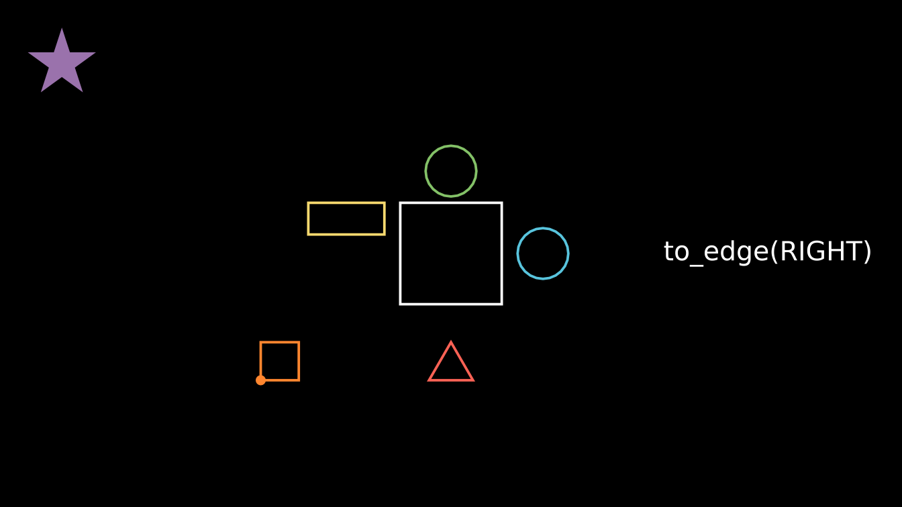
The orange square was moved with aligned_edge = DL, so
its lower left corner, not its center, sits on the orange dot.
align_to() lines up edges. Below, the bottom row is a
copy of the top row whose members were each aligned to the group’s top
edge:
row <- VGroup(Square(1), Circle(radius = 0.8, color = BLUE), Rectangle(width = 1, height = 2.2, color = GREEN),
Triangle(color = YELLOW))$arrange(RIGHT, buff = 0.5)$shift(1.6 * UP)
aligned <- row$copy()$shift(3.2 * DOWN)
for (m in aligned$submobjects) m$align_to(aligned, UP)
plot(VGroup(row, aligned, DashedLine(c(-4, aligned$get_top()[2], 0), c(4, aligned$get_top()[2], 0), color = GREY_B)))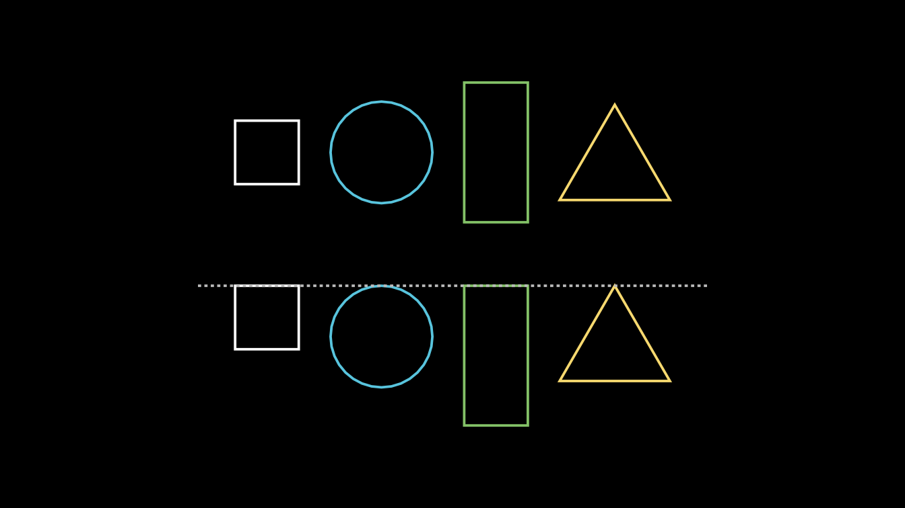
The frame stops you from losing things: buffers keep a margin from
the edge. The standard values are SMALL_BUFF (0.1),
MED_SMALL_BUFF (0.25), MED_LARGE_BUFF (0.5)
and LARGE_BUFF (1); next_to() and
arrange() default to
DEFAULT_MOBJECT_TO_MOBJECT_BUFFER (0.25) and
to_edge() to DEFAULT_MOBJECT_TO_EDGE_BUFFER
(0.5).
Arranging groups
arrange(direction, buff, center) lines up the members of
a group, each next to the previous one; extra arguments such as
aligned_edge go to next_to().
arrange_in_grid() builds a table: give rows or
cols, buff (one number, or one for columns and
one for rows), alignments, and flow_order
("rd" fills rows first, "dr" columns
first).
numbered <- function(n) VGroup(lapply(seq_len(n), function(i) {
VGroup(Square(side_length = 0.5 + 0.12 * (i %% 3), color = BLUE), Text(as.character(i), font_size = 30))
}))
a <- numbered(5)$arrange(DOWN, aligned_edge = LEFT, buff = 0.1)
b <- numbered(6)$arrange_in_grid(rows = 2, buff = c(0.3, 0.3))
d <- numbered(6)$arrange_in_grid(rows = 2, flow_order = "dr", buff = c(0.3, 0.3))
plot(VGroup(a, b, d)$arrange(RIGHT, buff = 1))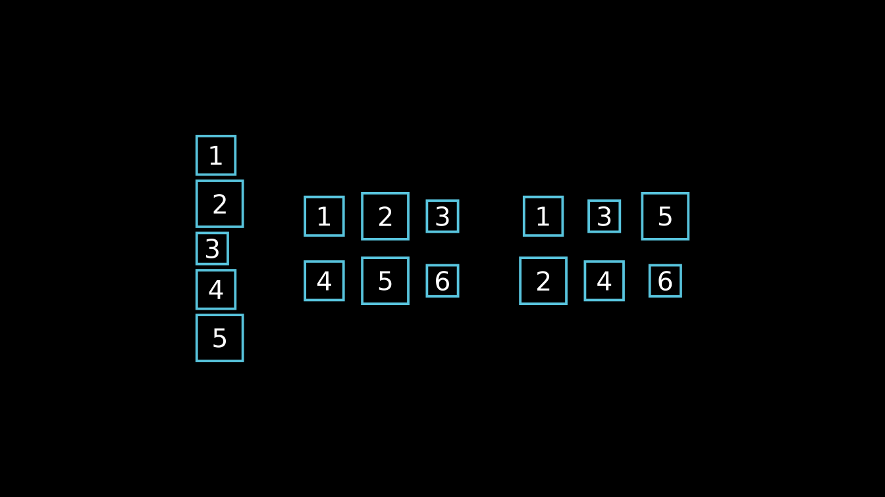
Reading positions and sizes
sq <- Square(side_length = 2)$shift(RIGHT)
sq$get_center()
#> [1] 1 0 0
sq$get_corner(UR)
#> [1] 2 1 0
c(sq$get_top()[2], sq$get_bottom()[2], sq$get_left()[1], sq$get_right()[1])
#> [1] 1 -1 0 2
sq$get_critical_point(DL)
#> [1] 0 -1 0
sq$get_x()
#> [1] 1
c(sq$width, sq$height)
#> [1] 2 2
sq$width <- 4 # width, height and depth can be set; the shape scales evenly
sq$height
#> [1] 4
sq$set_x(0)$get_center()
#> [1] 0 0 0
Line(LEFT, RIGHT)$get_length()
#> [1] 2
Circle()$get_arc_length()
#> [1] 6.281205
zapsmall(Circle()$point_from_proportion(0.25))
#> [1] 0 1 0match_width(), match_height(),
match_x() and match_y() copy a size or
coordinate from another mobject; surround() and
replace() fit one mobject over another.
Transforming
scale(), rotate(), flip() and
stretch() work about the center by default. Give
about_point (any point) or about_edge (a
direction) to keep another point fixed. In the pictures, the gray
outline is the original.
ghost <- function(m) m$copy()$set_stroke(GREY_B, width = 2)$set_fill(opacity = 0)
flag <- function() Polygon(c(0, -1, 0), c(0, 1, 0), c(1.2, 0.6, 0), c(0.3, 0.3, 0), c(0.3, -1, 0),
color = YELLOW, fill_opacity = 0.6)
s1 <- Square(color = BLUE, fill_opacity = 0.5)
s2 <- Square(color = BLUE, fill_opacity = 0.5)
s3 <- Square(color = GREEN, fill_opacity = 0.5)
s4 <- Square(color = GREEN, fill_opacity = 0.5)
f1 <- flag()
c1 <- Circle(color = RED, fill_opacity = 0.5)
panels <- VGroup(
VGroup(ghost(s1), s1$scale(1.4)),
VGroup(ghost(s2), s2$scale(1.4, about_edge = DL)),
VGroup(ghost(s3), s3$rotate(PI / 6)),
VGroup(ghost(s4), s4$rotate(PI / 6, about_point = s4$get_corner(DL))),
VGroup(ghost(f1), f1$flip(UP)),
VGroup(ghost(c1), c1$stretch(1.6, 1))
)$arrange(RIGHT, buff = 0.9)
panels$width <- 13
plot(panels)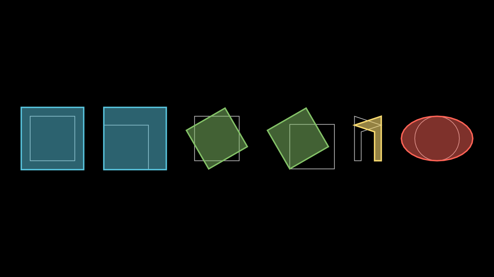
From left to right: scale(1.4),
scale(1.4, about_edge = DL), rotate(PI / 6),
rotate(PI / 6, about_point = <corner>),
flip(UP) (a mirror image across the vertical axis) and
stretch(1.6, 1). The dimension argument of
stretch() counts from 1, so 1 is x and 2 is y.
rotate(angle, axis) turns counterclockwise about
axis (OUT by default). Rotations about other
axes tilt the mobject out of the plane, which matters in 3D scenes.
Functions and matrices
apply_function(func) sends every point through a
function of a point, and apply_matrix(matrix) multiplies
every point by a 2 x 2 or 3 x 3 matrix (about the origin unless
about_point is given).
apply_complex_function() takes a function of a complex
number. Extra curves (insert_n_curves()) keep a bent shape
smooth.
wave <- function(p) p + c(0, 0.3 * sin(2 * p[1]), 0)
grid_lines <- function() {
g <- VGroup(c(lapply(seq(-1.5, 1.5, by = 0.5), function(k) Line(c(-1.5, k, 0), c(1.5, k, 0), color = BLUE)),
lapply(seq(-1.5, 1.5, by = 0.5), function(k) Line(c(k, -1.5, 0), c(k, 1.5, 0), color = YELLOW))))
for (l in g$submobjects) l$insert_n_curves(16)
g
}
shear <- matrix(c(1, 0, 0.5, 1), 2) # (x, y) goes to (x + 0.5 y, y)
bent <- VGroup(grid_lines(), grid_lines()$apply_function(wave), grid_lines()$apply_matrix(shear),
grid_lines()$apply_complex_function(function(z) z^2 / 3))$arrange(RIGHT, buff = 0.7)
bent$width <- 13
plot(bent)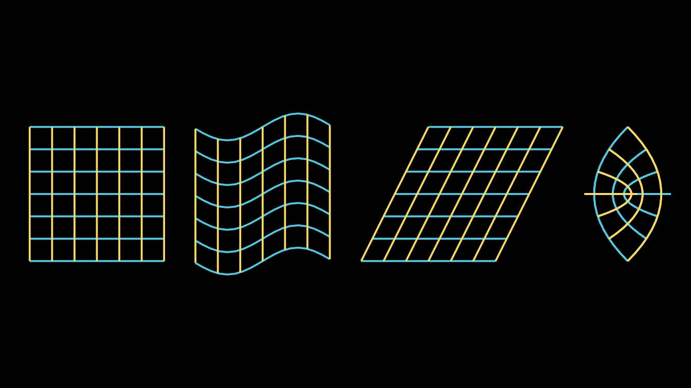
Matrices are easier to understand in motion.
ApplyMatrix() animates the same multiplication:
ShearGrid <- R6::R6Class("ShearGrid", inherit = Scene,
public = list(construct = function() {
grid <- VGroup(c(lapply(-3:3, function(k) Line(c(-3, k, 0), c(3, k, 0), color = BLUE_D)),
lapply(-3:3, function(k) Line(c(k, -3, 0), c(k, 3, 0), color = BLUE_D))))
sq <- Square(side_length = 1, color = YELLOW, fill_opacity = 0.6)$move_to(c(0.5, 0.5, 0))
self$add(grid, sq)
self$play(ApplyMatrix(matrix(c(1, 0, 1, 1), 2), VGroup(grid, sq)), run_time = 2)
})
)Styling
Fill, stroke and opacity
A VMobject has a fill (color and opacity) and a stroke (color, width
and opacity). set_color() sets both colors,
set_fill() and set_stroke() one each, and
set_opacity() both opacities. Stroke widths are in
hundredths of a unit (the default DEFAULT_STROKE_WIDTH is
4). Every setter applies to the whole family unless
family = FALSE.
styled <- VGroup(
Square()$set_color(BLUE),
Square()$set_fill(BLUE, opacity = 0.7),
Square()$set_fill(BLUE, opacity = 0.7)$set_stroke(YELLOW, width = 12),
Square(fill_opacity = 1, color = RED)$set_opacity(0.3),
Square(stroke_width = 0, fill_opacity = 1, color = GREEN)
)$arrange(RIGHT, buff = 0.5)
plot(styled)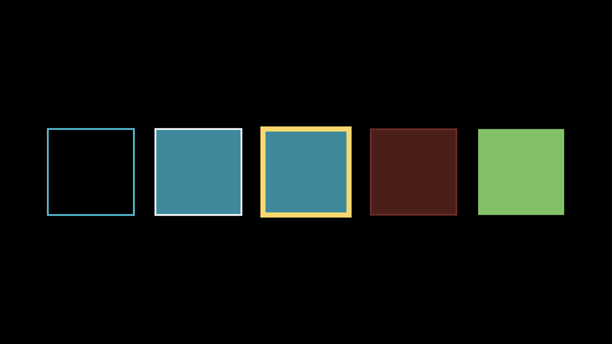
Constructors take the same settings as arguments: color,
fill_color, fill_opacity,
stroke_color, stroke_width and
stroke_opacity. set_style() sets several at
once, get_style() reads them, and
match_style() copies another mobject’s style.
fancy <- Square()$set_style(fill_color = RED, fill_opacity = 0.5, stroke_color = BLUE, stroke_width = 8)
str(fancy$get_style(simple = TRUE))
#> List of 5
#> $ stroke_opacity: num 1
#> $ stroke_width : num 8
#> $ fill_color : chr "#FC6255"
#> $ fill_opacity : num 0.5
#> $ stroke_color : chr "#58C4DD"
Circle()$match_style(fancy)$get_stroke_width()
#> [1] 8
fancy$get_fill_color()
#> [1] "#FC6255"
fancy$get_fill_opacity()
#> [1] 0.5A background stroke is drawn behind the fill. It outlines text and labels so they stay readable on busy backgrounds:
outlined <- Text("outline", font_size = 72, color = YELLOW)$set_stroke(BLACK, width = 10, background = TRUE)
plot(VGroup(Rectangle(width = 6, height = 1.6, color = BLUE, fill_opacity = 1), outlined))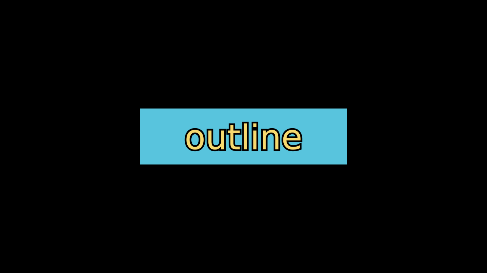
Gradients and sheen
Several colors make a gradient; set_sheen() lightens
toward one side. The colors vignette has the
details.
plot(VGroup(
Circle(fill_opacity = 1)$set_color(c(BLUE, GREEN)),
Star(fill_opacity = 1)$set_color(c(YELLOW, RED)),
Square(fill_opacity = 1, color = PURPLE)$set_sheen(0.7, UR),
VGroup(lapply(1:9, function(i) Dot(radius = 0.2)))$arrange(RIGHT)$set_color_by_gradient(BLUE, YELLOW)
)$arrange(RIGHT, buff = 0.6))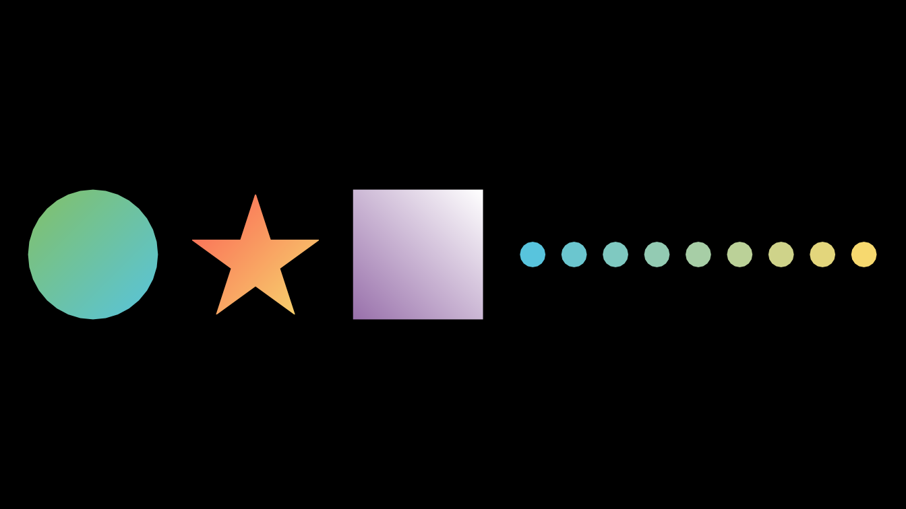
Drawing order with z_index
Mobjects are drawn in the order they were added, so later ones cover
earlier ones. A higher z_index brings a mobject to the
front regardless:
make_stack <- function() VGroup(
Square(color = RED, fill_opacity = 1),
Square(color = GREEN, fill_opacity = 1)$shift(0.6 * (RIGHT + DOWN)),
Square(color = BLUE, fill_opacity = 1)$shift(1.2 * (RIGHT + DOWN))
)
default_order <- make_stack()
raised <- make_stack()
raised[1]$set_z_index(2)
raised[2]$set_z_index(1)
plot(VGroup(default_order, raised)$arrange(RIGHT, buff = 1.5))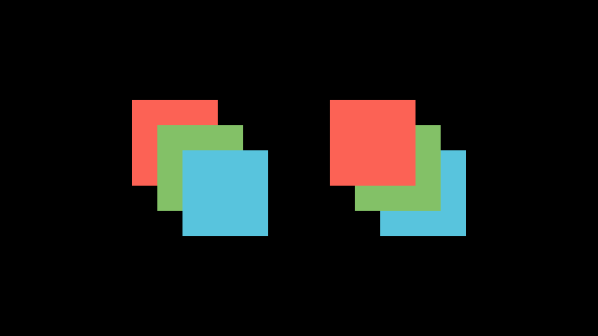
Constructors also accept z_index = directly.
Copying and saving state
-
copy()returns an independent deep copy, submobjects included. -
become(other)makes a mobject take another’s points and style while keeping its identity, so animations and updaters that refer to it still work. -
save_state()stores a snapshot andrestore()goes back to it. -
generate_target()makes a copy in$targetto modify; theMoveToTarget()animation then morphs the mobject into it.
original <- Square(color = BLUE)
twin <- original$copy()$shift(RIGHT)
original$get_center() # unchanged
#> [1] 0 0 0
morph <- Square()
id <- morph$mob_id
morph$become(Circle(color = RED))
morph$get_color()
#> [1] "#FC6255"
morph$mob_id == id # still the same object
#> [1] TRUE
s <- Square()
s$save_state()
s$shift(3 * RIGHT)$scale(0.5)
s$restore()$get_center()
#> [1] 0 0 0
invisible(s$generate_target())
s$target$shift(UP)$set_color(YELLOW)
c(s$get_center()[2], s$target$get_center()[2])
#> [1] 0 1The animated version shows why these are useful: the target is
prepared first and the change happens in one smooth move, and
Restore() animates back to the saved state.
StateAndTarget <- R6::R6Class("StateAndTarget", inherit = Scene,
public = list(construct = function() {
sq <- Square(color = BLUE, fill_opacity = 0.6)$shift(3 * LEFT)
sq$save_state()
invisible(sq$generate_target())
sq$target$shift(6 * RIGHT)$scale(0.5)$rotate(PI / 4)$set_color(YELLOW)
ghost <- DashedVMobject(sq$target$copy()$set_fill(opacity = 0), num_dashes = 24)
self$add(ghost)
self$play(MoveToTarget(sq), run_time = 1.5)
self$play(sq$animate$shift(2 * UP), run_time = 0.8)
self$play(Restore(sq), run_time = 1.2)
self$add(Text("restored", font_size = 32)$next_to(sq, DOWN))
self$wait(0.3)
})
)Groups and indexing
VGroup and Group
VGroup() groups VMobjects so they move and style
together; Group() groups any mobjects, such as an image
with shapes. Both accept mobjects or lists of mobjects, so
VGroup(lapply(...)) builds a group from a loop.
add() and remove() change the members
afterwards.
g <- VGroup(Circle(), Square(), Triangle())
length(g)
#> [1] 3
g$add(Star())
length(g)
#> [1] 4
g$remove(g[1])
length(g)
#> [1] 3
dots <- VGroup(lapply(1:5, function(i) Dot()))$arrange(RIGHT)
length(dots)
#> [1] 5
img <- ImageMobject(matrix(seq(0, 255, length.out = 64), 8, 8))
class(Group(img, Circle()))[1]
#> [1] "Group"Indexing
g[i] returns the i-th submobject, counting from 1. A
vector of indices returns a group of those submobjects; negative indices
drop members, as for R vectors. g[[i]] also returns one
submobject. length(g) counts the submobjects, and
g$submobjects is the plain list, convenient for loops.
g <- VGroup(Circle(), Square(), Triangle(), Star())
class(g[2])[1]
#> [1] "Square"
class(g[2:3])[1]
#> [1] "VGroup"
length(g[-1])
#> [1] 3
class(g[[4]])[1]
#> [1] "Star"
for (m in g$submobjects) m$set_fill(opacity = 0.5)Indexing makes it easy to style parts of a group:
row <- VGroup(lapply(1:8, function(i) Square(side_length = 0.9)))$arrange(RIGHT, buff = 0.15)
row[c(2, 4, 6, 8)]$set_fill(BLUE, opacity = 1)
row[1]$set_color(YELLOW)
row[[8]]$scale(0.6)
plot(row)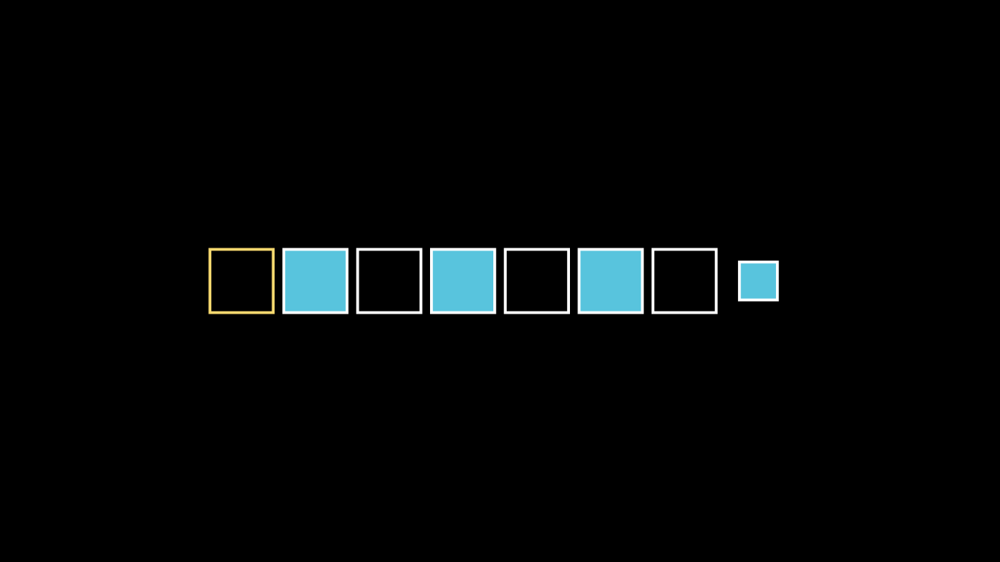
VDict
VDict() is a VGroup whose members have names. Index it
with a key (or a vector of keys for a group), assign with
vd[key] <- mobject, and use the methods
get(), add_key_value_pair(),
remove_key() and get_all_submobjects(). With
[[, a character key returns a field or method when there is
one of that name, otherwise the entry.
vd <- VDict(list(square = Square(color = BLUE), circle = Circle()))
class(vd["square"])[1]
#> [1] "Square"
vd["triangle"] <- Triangle(color = GREEN)
length(vd)
#> [1] 3
vd$get("circle")$get_color()
#> [1] "#FC6255"
vd$remove_key("circle")
length(vd)
#> [1] 2
class(vd[c("square", "triangle")])[1]
#> [1] "VGroup"
plot(vd$arrange(RIGHT, buff = 1))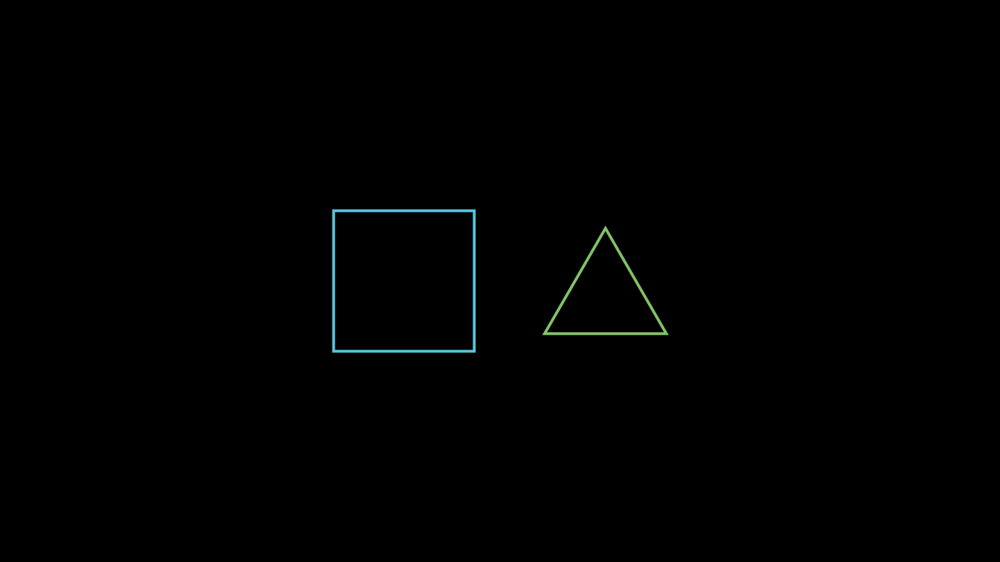
The geometry library
This section shows every shape. A small helper lays out a catalog with a caption under each shape.
catalog <- function(items, cols = 4, font_size = 30, buff = c(0.7, 0.5)) {
cells <- VGroup(lapply(names(items), function(nm) {
VGroup(items[[nm]], Text(nm, font_size = font_size)$next_to(items[[nm]], DOWN, buff = 0.2))
}))
cells$arrange_in_grid(cols = cols, buff = buff)
cells$scale(min(1, 13.4 / cells$width, 7.6 / cells$height))
}Arcs, circles and dots
plot(catalog(list(
"Arc" = Arc(radius = 1, start_angle = PI / 6, angle = 4 * PI / 3, color = BLUE),
"ArcBetweenPoints" = ArcBetweenPoints(LEFT, RIGHT, angle = PI / 2, color = GREEN),
"Circle" = Circle(radius = 1),
"Ellipse" = Ellipse(width = 2.4, height = 1.2, color = YELLOW),
"Dot" = Dot(radius = 0.2, color = WHITE),
"AnnotationDot" = AnnotationDot()$scale(2.5),
"LabeledDot" = LabeledDot(Text("A", font_size = 40, color = BLACK), color = YELLOW),
"CubicBezier" = CubicBezier(c(-1, -0.5, 0), c(-0.5, 1.5, 0), c(0.5, -1.5, 0), c(1, 0.5, 0), color = PINK)
)))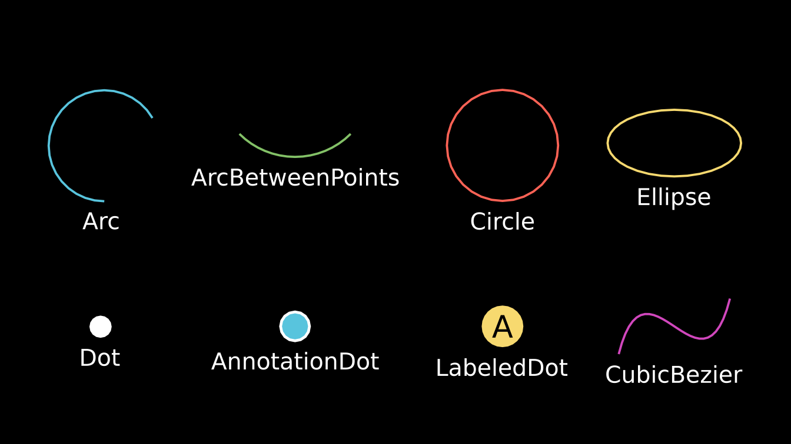
-
Arc(radius, start_angle, angle, arc_center)sweepsangleradians counterclockwise fromstart_angle.ArcBetweenPoints(start, end, angle)bends between two points. -
Circle(radius)is a full arc;Ellipse(width, height)a stretched circle.circle_from_three_points()andCircleClass$from_three_points()find the circle through three points, and$point_at_angle()gives the point at an angle on a circle. -
Dot(point, radius)is a small filled circle;AnnotationDot()has a colored fill and a white stroke;LabeledDot(label)is a dot with a label inside (a string is typeset withMathTex(), so pass aText()mobject when LaTeX is not available). -
CubicBezier(start_anchor, start_handle, end_handle, end_anchor)is a single Bezier curve.
through <- circle_from_three_points(LEFT, UP, c(1.5, 0.5, 0), color = TEAL)
pts <- VGroup(Dot(LEFT), Dot(UP), Dot(c(1.5, 0.5, 0)))
on_circle <- Dot(through$point_at_angle(-PI / 2), color = RED)
plot(VGroup(through, pts, on_circle))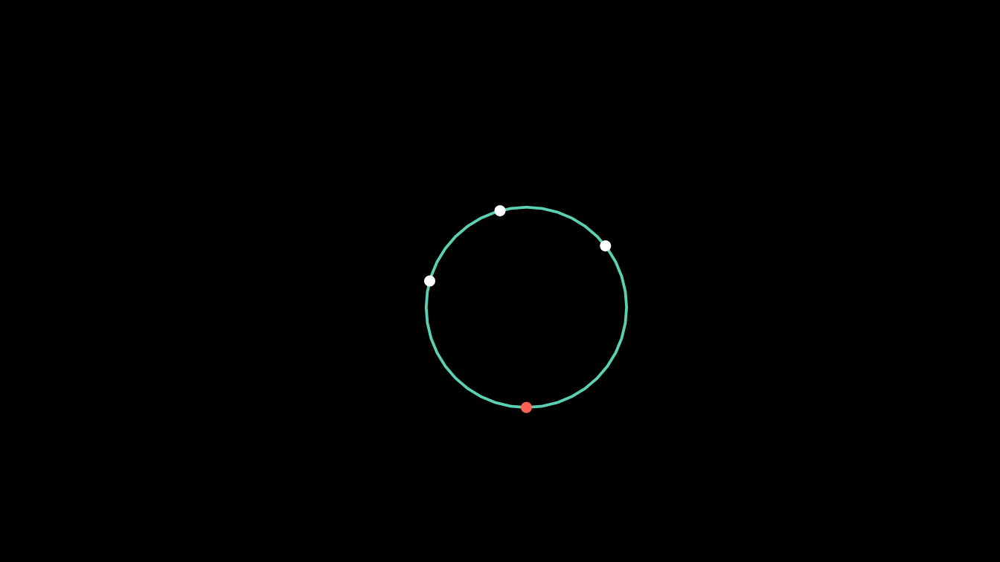
Sectors, rings and arc polygons
p3 <- list(c(-1, -0.6, 0), c(1, -0.6, 0), c(0, 1.1, 0))
arc_poly <- ArcPolygon(p3[[1]], p3[[2]], p3[[3]], arc_config = list(angle = PI / 3, color = ORANGE),
fill_color = ORANGE, fill_opacity = 0.3, stroke_width = 0)
a <- c(-1, -0.6, 0)
b <- c(1, -0.6, 0)
cc <- c(0, sqrt(3) - 0.6, 0)
reuleaux <- ArcPolygonFromArcs(
ArcBetweenPoints(a, b, radius = 2, stroke_width = 0),
ArcBetweenPoints(b, cc, radius = 2, stroke_width = 0),
ArcBetweenPoints(cc, a, radius = 2, stroke_color = RED),
color = PURPLE, fill_opacity = 1
)
plot(catalog(list(
"Sector" = Sector(radius = 1.2, angle = PI / 3, color = BLUE),
"AnnularSector" = AnnularSector(inner_radius = 0.6, outer_radius = 1.2, angle = 2 * PI / 3, color = GREEN),
"Annulus" = Annulus(inner_radius = 0.6, outer_radius = 1.1, color = RED),
"ArcPolygon" = arc_poly,
"ArcPolygonFromArcs" = reuleaux
), cols = 5))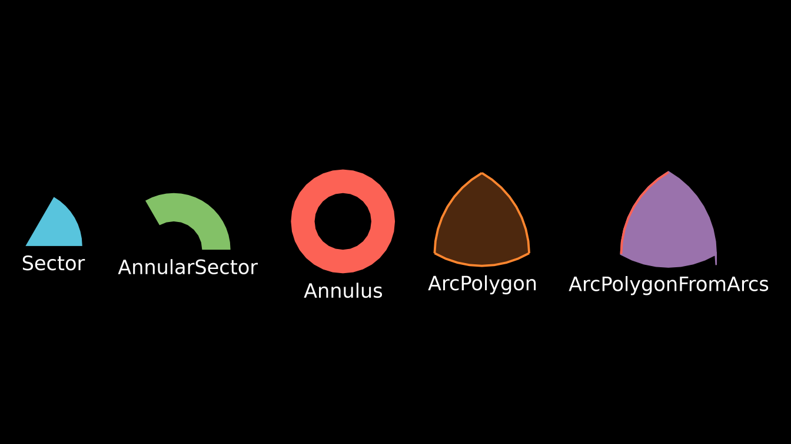
Sector(), AnnularSector() and
Annulus() are filled by default. ArcPolygon()
joins its vertices with arcs (one angle or
radius for all, or a list of settings in
arc_config); ArcPolygonFromArcs() joins given
arcs with straight segments where they do not meet. Both keep their arcs
as submobjects ($arcs), which are drawn with their own
style; here the arcs carry the orange outline of the first shape, and
only one arc of the Reuleaux triangle has a visible (red) stroke.
Lines
curve <- Circle(radius = 0.9, color = GREY_B)
plot(catalog(list(
"Line" = Line(c(-1, -0.5, 0), c(1, 0.5, 0), color = BLUE),
"Line(path_arc = )" = Line(LEFT, RIGHT, path_arc = PI / 2, color = GREEN),
"DashedLine" = DashedLine(LEFT, RIGHT, color = YELLOW, dash_length = 0.15),
"TangentLine" = VGroup(curve, TangentLine(curve, alpha = 0.125, length = 2.2, color = RED)),
"Elbow" = Elbow(width = 0.8, angle = PI / 4, color = PINK)
), cols = 5))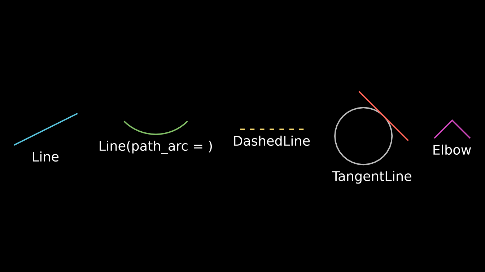
Line(start, end, buff, path_arc) accepts points or
mobjects for start and end (then it starts at
their edges), and buff shortens it at both ends. Lines have
helpers for their geometry:
ln <- Line(ORIGIN, c(3, 4, 0))
c(ln$get_length(), ln$get_angle() / DEGREES, ln$get_slope())
#> [1] 5.000000 53.130102 1.333333
ln$get_vector()
#> [1] 3 4 0
ln$get_unit_vector()
#> [1] 0.6 0.8 0.0
ln$put_start_and_end_on(LEFT, RIGHT)$get_length()
#> [1] 2
ln$set_length(5)$get_length()
#> [1] 5
Line(Circle()$shift(2 * LEFT), Circle()$shift(2 * RIGHT))$get_start() # starts at the edge
#> [1] -1 0 0TangentLine(vmob, alpha, length) touches a curve at
proportion alpha of its length, and
Elbow(width, angle) is the small corner mark used for right
angles.
Arrows and tips
plot(catalog(list(
"Arrow" = Arrow(LEFT, RIGHT, color = BLUE),
"DoubleArrow" = DoubleArrow(LEFT, RIGHT, color = GREEN),
"Vector" = Vector(c(1.2, 0.8, 0), color = YELLOW),
"CurvedArrow" = CurvedArrow(LEFT, RIGHT, color = RED),
"CurvedDoubleArrow" = CurvedDoubleArrow(LEFT, RIGHT, color = PINK),
"Line + add_tip()" = Line(LEFT, RIGHT, color = TEAL)$add_tip()
), cols = 3))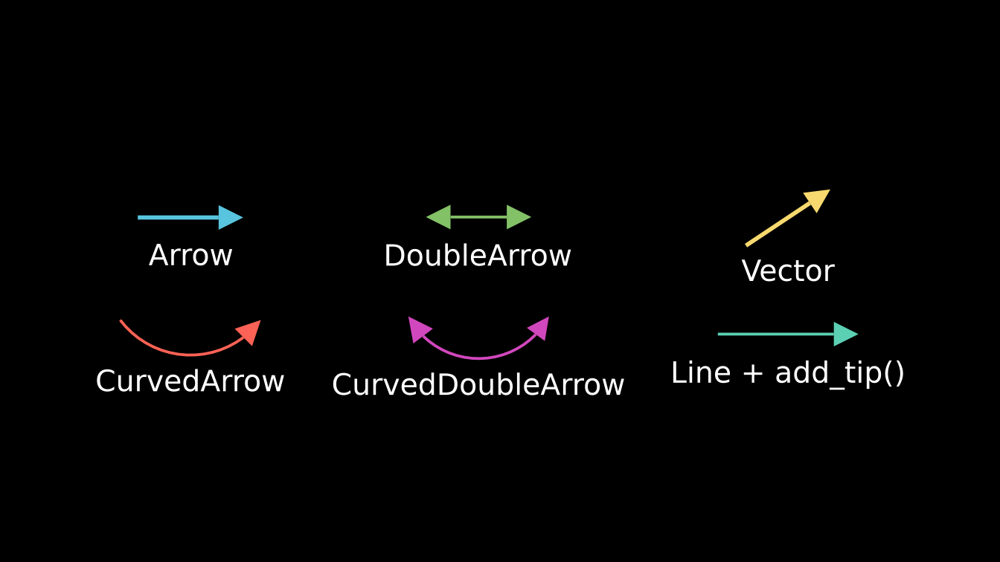
Arrow(start, end, buff) stops buff short of
its end points (0.25 by default) and keeps its tip in proportion when it
is short. Vector(direction) starts at the origin. Any line
or arc can get a tip with add_tip(), at the start with
add_tip(at_start = TRUE); get_tip(),
get_tips(), has_tip() and
pop_tips() manage them.
The tip shape is a class generator passed as tip_shape
(or tip_shape_start and tip_shape_end for
double arrows). The base class of all tips is
ArrowTipClass, and the class of anything that can carry
tips is TipableVMobjectClass.
tips <- c("ArrowTriangleTipClass", "ArrowTriangleFilledTipClass", "ArrowCircleTipClass",
"ArrowCircleFilledTipClass", "ArrowSquareTipClass", "ArrowSquareFilledTipClass", "StealthTipClass")
tip_rows <- VGroup(lapply(seq_along(tips), function(i) {
y <- 3.4 - 0.85 * i
arrow <- Arrow(c(0.5, y, 0), c(3.5, y, 0), tip_shape = get(tips[i]), color = YELLOW)
VGroup(Text(tips[i], font_size = 30)$next_to(arrow, LEFT, buff = 0.4), arrow)
}))
plot(tip_rows$center())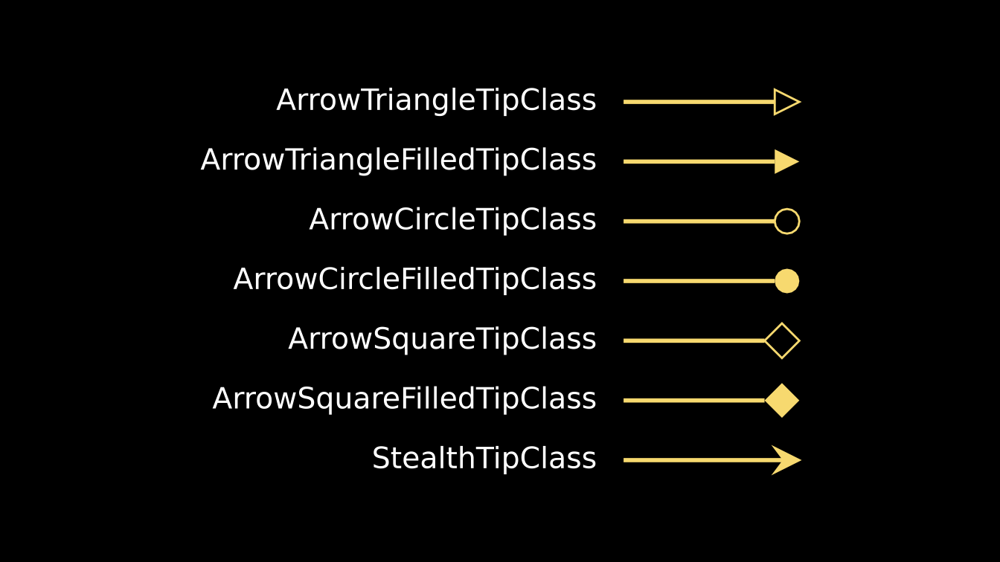
Angles
Angle(line1, line2) marks the angle between two lines
that meet. Choose which of the four angles with quadrant,
take the reflex angle with other_angle = TRUE, or mark it
with a dot or a right angle elbow. RightAngle() is the
elbow version; angle_from_three_points(A, B, C) (or
AngleClass$from_three_points()) builds the angle at
B, and get_value() reads it.
make_lines <- function() VGroup(Line(ORIGIN, 1.6 * RIGHT), Line(ORIGIN, rotate_vector(1.6 * RIGHT, PI / 3)))
l1 <- make_lines()
l2 <- make_lines()
l3 <- VGroup(Line(1.2 * LEFT, 1.2 * RIGHT), Line(rotate_vector(1.2 * LEFT, PI / 3), rotate_vector(1.2 * RIGHT, PI / 3)))
l4 <- make_lines()
l5 <- VGroup(Line(ORIGIN, 1.6 * RIGHT), Line(ORIGIN, 1.6 * UP))
plot(catalog(list(
"Angle" = VGroup(l1, Angle(l1[1], l1[2], color = YELLOW)),
"other_angle = TRUE" = VGroup(l2, Angle(l2[1], l2[2], other_angle = TRUE, radius = 0.4, color = GREEN)),
"quadrant = c(-1, -1)" = VGroup(l3, Angle(l3[1], l3[2], quadrant = c(-1, -1), color = RED)),
"dot = TRUE" = VGroup(l4, Angle(l4[1], l4[2], dot = TRUE, color = BLUE)),
"RightAngle" = VGroup(l5, RightAngle(l5[1], l5[2], length = 0.4, color = PINK))
), cols = 5))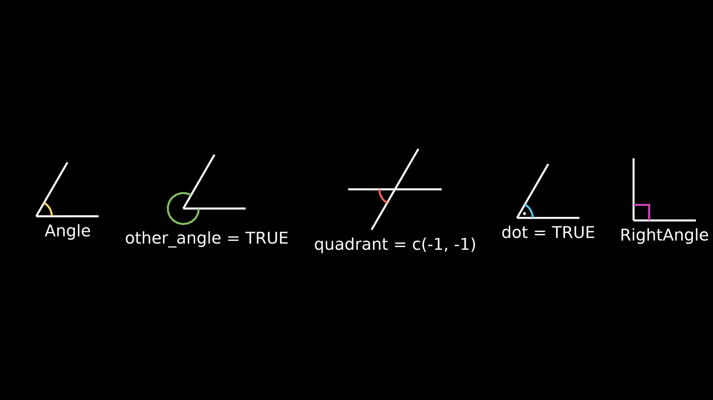
angle_from_three_points(RIGHT, ORIGIN, UP)$get_value(degrees = TRUE)
#> [1] 90
Angle(l1[1], l1[2])$get_value()
#> [1] 1.047198TangentialArc(line1, line2, radius, corner) is an arc of
the given radius tangent to both lines, the rounded corner between
them:
h <- Line(c(-4, -2, 0), c(4, -2, 0), color = GREY_B)
v <- Line(c(0, -3.5, 0), c(0, 3, 0), color = GREY_B)
plot(VGroup(h, v,
TangentialArc(h, v, radius = 1.5, color = YELLOW, stroke_width = 6),
TangentialArc(h, v, radius = 1, corner = c(-1, 1), color = RED, stroke_width = 6)))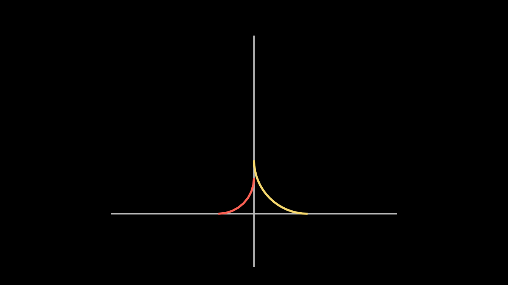
Polygons
plot(catalog(list(
"Polygon" = Polygon(c(-1, -0.8, 0), c(1, -0.8, 0), c(1.2, 0.5, 0), c(0, 1, 0), c(-1.2, 0.3, 0), color = BLUE),
"Triangle" = Triangle(color = GREEN),
"Square" = Square(side_length = 1.6, color = YELLOW),
"Rectangle" = Rectangle(width = 2.2, height = 1.2, color = RED),
"RegularPolygon(6)" = RegularPolygon(6, color = TEAL),
"RegularPolygram(7, 3)" = RegularPolygram(7, density = 3, color = PURPLE),
"Star(5)" = Star(5, color = GOLD),
"RoundedRectangle" = RoundedRectangle(corner_radius = 0.3, width = 2.2, height = 1.3, color = PINK)
)))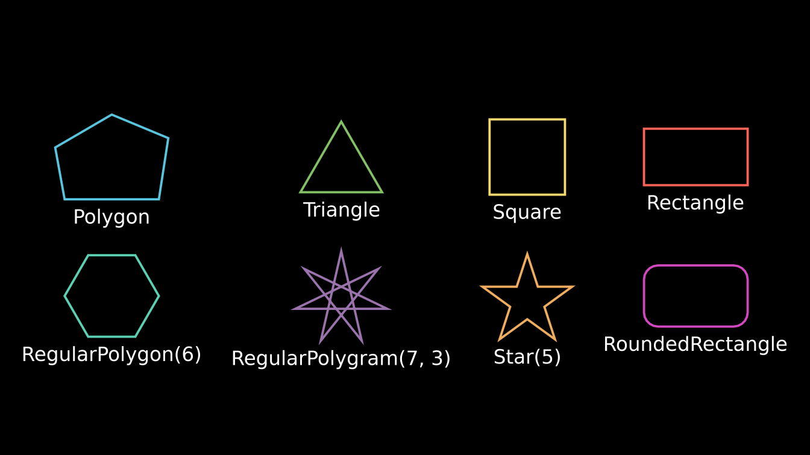
-
Polygon(...)takes its vertices as separate points or as one matrix.Polygram(...)takes vertex groups (one matrix each) and draws each as a closed path, so it can have several pieces. -
RegularPolygon(n)andRegularPolygram(num_vertices, density)(a star polygon that connects everydensityth vertex);Triangle()isRegularPolygon(3). -
Star(n, outer_radius, inner_radius, density)is a star outline. -
Rectangle(width, height, grid_xstep, grid_ystep)can draw a grid inside;Square(side_length);RoundedRectangle(corner_radius).
get_vertices() returns the corners, and
round_corners(radius) rounds them:
hexagon <- RegularPolygon(6)
nrow(hexagon$get_vertices())
#> [1] 6
two_parts <- Polygram(rbind(c(-1, 0, 0), c(0, 1, 0), c(1, 0, 0)),
rbind(c(-1, -0.4, 0), c(1, -0.4, 0), c(0, -1.4, 0)), color = ORANGE)
plot(catalog(list(
"Polygram (2 groups)" = two_parts,
"round_corners(0.3)" = Triangle(color = BLUE)$scale(1.2)$round_corners(radius = 0.3),
"Rectangle with grid" = Rectangle(width = 2.4, height = 1.6, grid_xstep = 0.4, grid_ystep = 0.4, color = GREEN),
"Star(7, density = 3)" = Star(7, outer_radius = 1, density = 3, color = YELLOW)
)))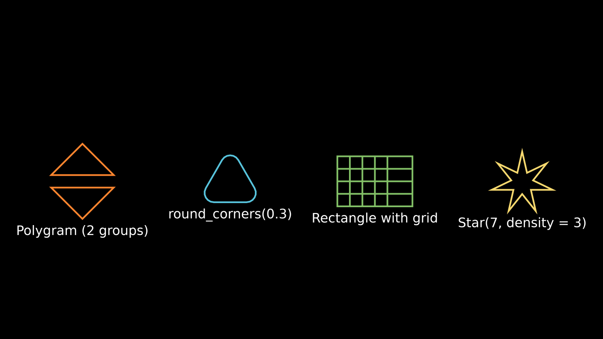
Cutouts and convex hulls
Cutout(main_shape, ...) punches the other shapes out of
the main one, so the holes show what is behind.
ConvexHull(...) is the smallest convex polygon around a set
of points.
stripes <- VGroup(lapply(1:6, function(i) {
Rectangle(width = 3, height = 0.5, stroke_width = 0, fill_opacity = 1, fill_color = c(RED, YELLOW)[i %% 2 + 1])
}))$arrange(DOWN, buff = 0)
holes <- Cutout(Square(side_length = 3), Circle(radius = 0.5)$shift(0.6 * UL),
Triangle()$scale(0.6)$shift(0.6 * DR), fill_opacity = 1, color = BLUE, stroke_width = 0)
set.seed(4)
cloud <- cbind(runif(20, -1.5, 1.5), runif(20, -1.2, 1.2), 0)
hull <- ConvexHull(cloud, color = YELLOW)
cloud_dots <- VGroup(lapply(seq_len(nrow(cloud)), function(i) Dot(cloud[i, ], radius = 0.05)))
plot(VGroup(VGroup(stripes, holes),
VGroup(hull, cloud_dots))$arrange(RIGHT, buff = 1.5))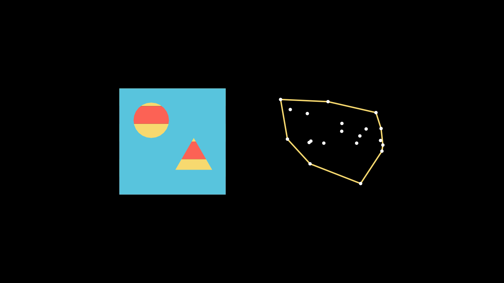
Annotation shapes
SurroundingRectangle() frames a mobject (with optional
rounded corners), BackgroundRectangle() puts a translucent
rectangle behind it, Underline() draws a line under it and
Cross() crosses it out (or makes a plain X without a
mobject).
framed <- Text("frame", font_size = 44)
backed <- Text("back", font_size = 44)
underlined <- Text("under", font_size = 44)
crossed <- Text("wrong", font_size = 44)
plot(catalog(list(
"SurroundingRectangle" = VGroup(framed, SurroundingRectangle(framed, corner_radius = 0.1)),
"BackgroundRectangle" = VGroup(Square(side_length = 1, color = BLUE, fill_opacity = 1)$shift(0.4 * UP),
BackgroundRectangle(backed, fill_opacity = 0.8), backed),
"Underline" = VGroup(underlined, Underline(underlined, color = YELLOW)),
"Cross" = VGroup(crossed, Cross(crossed))
), cols = 4, font_size = 26))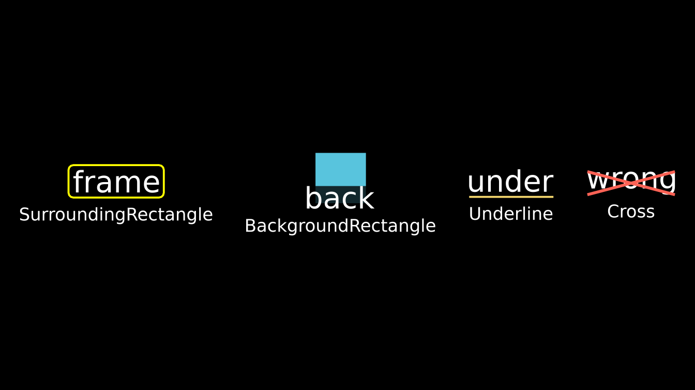
Boolean operations
Union(), Intersection(),
Difference() and Exclusion() combine shapes
the way a drawing program does. As upstream’s skia-pathops result, the
outline is made of pieces of the input curves cut where they cross, and
the new VMobject takes the usual style arguments.
sq <- Square(color = RED, fill_opacity = 0.5)$move_to(0.4 * LEFT)
ci <- Circle(color = BLUE, fill_opacity = 0.5)$move_to(0.4 * RIGHT + 0.4 * UP)
plot(catalog(list(
"inputs" = VGroup(sq$copy(), ci$copy()),
"Union" = Union(sq, ci, color = GREEN, fill_opacity = 1),
"Intersection" = Intersection(sq, ci, color = YELLOW, fill_opacity = 1),
"Difference" = Difference(sq, ci, color = PINK, fill_opacity = 1),
"Exclusion" = Exclusion(sq, ci, color = TEAL, fill_opacity = 1)
), cols = 5))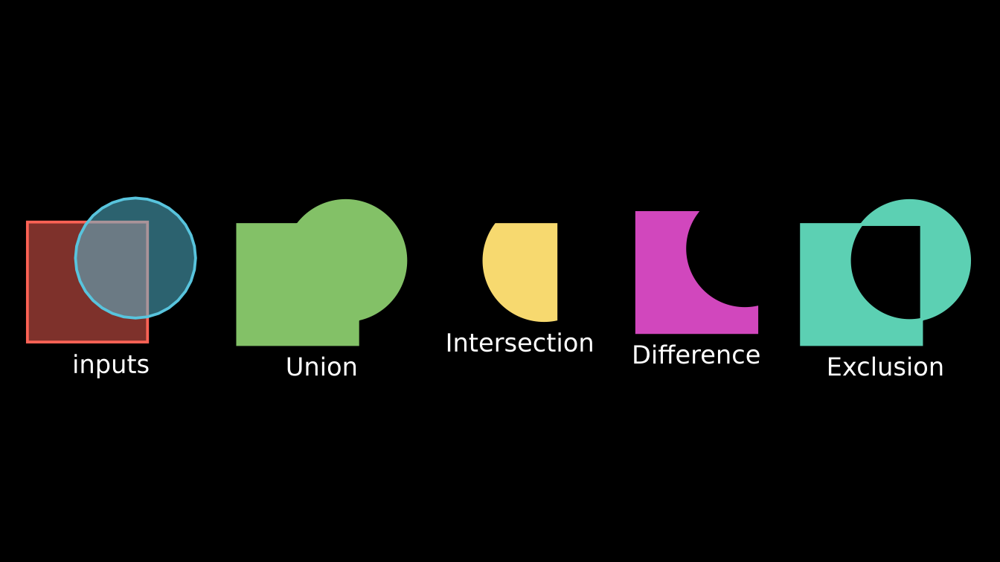
Union() and Intersection() take two or more
shapes; Difference(subject, clip) removes clip
from subject, and Exclusion() keeps what
exactly one of the two covers.
Braces
Brace(mobject, direction) draws a curly brace along one
side of a mobject. put_at_tip() places another mobject at
its tip, and get_text() / get_tex() make a
label there. BraceLabel() makes the brace and label in one
go (the label constructor is MathTex() by default;
BraceText() uses Text()).
BraceBetweenPoints() spans two points, and
ArcBrace() follows an arc.
rect <- Rectangle(width = 3, height = 1.5, color = BLUE)
b_down <- Brace(rect, DOWN)
b_left <- Brace(rect, LEFT, color = YELLOW)
width_label <- Text("width", font_size = 30)
b_down$put_at_tip(width_label)
with_braces <- VGroup(rect, b_down, b_left, width_label)
p1 <- c(-1.5, -1, 0)
p2 <- c(1, 1, 0)
between <- VGroup(Dot(p1), Dot(p2), BraceBetweenPoints(p1, p2, color = GREEN))
arc <- Arc(radius = 1.5, start_angle = PI / 6, angle = 2 * PI / 3, color = RED)
side_sq <- Square(side_length = 1.6, color = TEAL)
plot(catalog(list(
"Brace + put_at_tip()" = with_braces,
"BraceText" = VGroup(side_sq, BraceText(side_sq, "side", font_size = 30)),
"BraceBetweenPoints" = between,
"ArcBrace" = VGroup(arc, ArcBrace(arc))
), cols = 4, font_size = 26))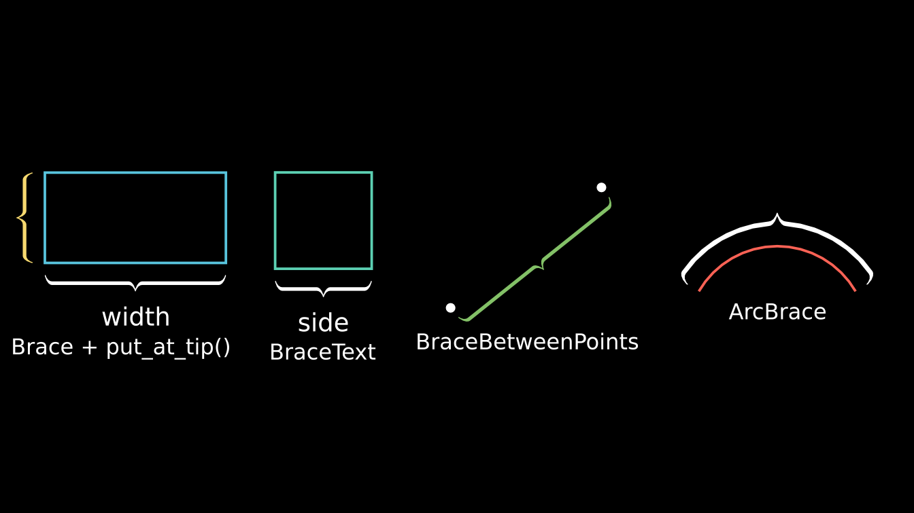
plot(BraceLabel(Line(2 * LEFT, 2 * RIGHT), "x^2 + y^2", brace_direction = UP))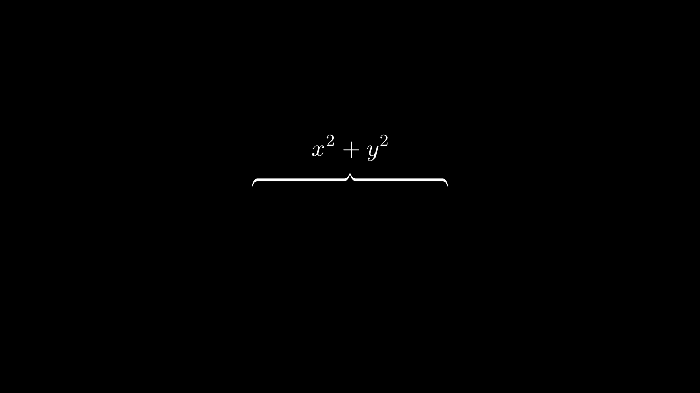
Labeled geometry
Label() is a label on a background box with a frame.
LabeledLine() and LabeledArrow() put such a
label at label_position (a proportion of the length), and
LabeledPolygram() puts it at the polygon’s pole of
inaccessibility, the interior point farthest from the edges (see
polylabel() in Math and utility
functions). A string label is typeset with MathTex(); a
Text() mobject works without LaTeX.
label_config, box_config and
frame_config style the parts.
Fills use the nonzero winding rule, as in SVG and upstream: a ring inside another is a hole when its vertices run the opposite way, which is why the inner ring of the polygram below is listed clockwise.
ring <- list(rbind(c(-2, -1.2, 0), c(2, -1.2, 0), c(2, 1.2, 0), c(-2, 1.2, 0)), # counterclockwise
rbind(c(-1.6, -0.8, 0), c(-1.6, 0.8, 0), c(-0.2, 0.8, 0), c(-0.2, -0.8, 0))) # clockwise: a hole
plot(catalog(list(
"Label" = Label(Text("Label", font_size = 36), box_config = list(color = BLUE, fill_opacity = 0.8)),
"LabeledLine" = LabeledLine(Text("0.8", font_size = 28), label_position = 0.8,
start = c(-1.5, -0.7, 0), end = c(1.5, 0.7, 0), color = YELLOW),
"LabeledArrow" = LabeledArrow(Text("force", font_size = 28), start = c(-1.5, 0, 0), end = c(1.5, 0, 0),
color = GREEN),
"LabeledPolygram" = LabeledPolygram(ring[[1]], ring[[2]], label = Text("pole", font_size = 28),
color = RED, fill_opacity = 0.3)
), cols = 4, font_size = 26))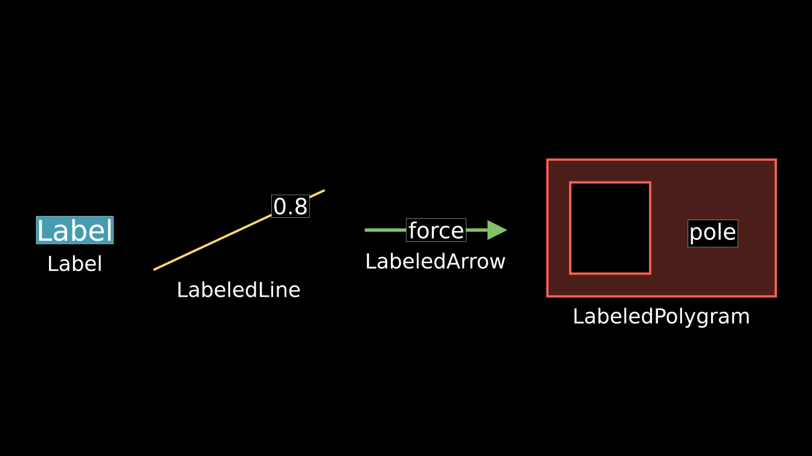
Dashed paths, pieces and screen shapes
-
DashedVMobject(vmobject, num_dashes, dashed_ratio)is a dashed copy of any VMobject. -
CurvesAsSubmobjects(vmobject)splits a path into one submobject per Bezier curve, so each piece can be colored on its own. -
ScreenRectangle(aspect_ratio, height)has the shape of the screen (16:9 by default), andFullScreenRectangle()covers the whole frame. -
VectorizedPoint(location)is an invisible point, useful as an anchor for animations and layouts.
pieces <- CurvesAsSubmobjects(Circle(radius = 1)$set_stroke(width = 10))
pieces$set_color_by_gradient(BLUE, YELLOW, RED)
anchor <- VectorizedPoint(c(1, 1, 0))
c(length(pieces), anchor$width)
#> [1] 8.00 0.01
plot(VGroup(
FullScreenRectangle(color = GREY_D, stroke_width = 8),
catalog(list(
"DashedVMobject" = DashedVMobject(Star(color = YELLOW)$scale(1.2), num_dashes = 30),
"CurvesAsSubmobjects" = pieces,
"ScreenRectangle" = ScreenRectangle(height = 1.6, color = GREEN)
), cols = 3)$scale(0.9)
))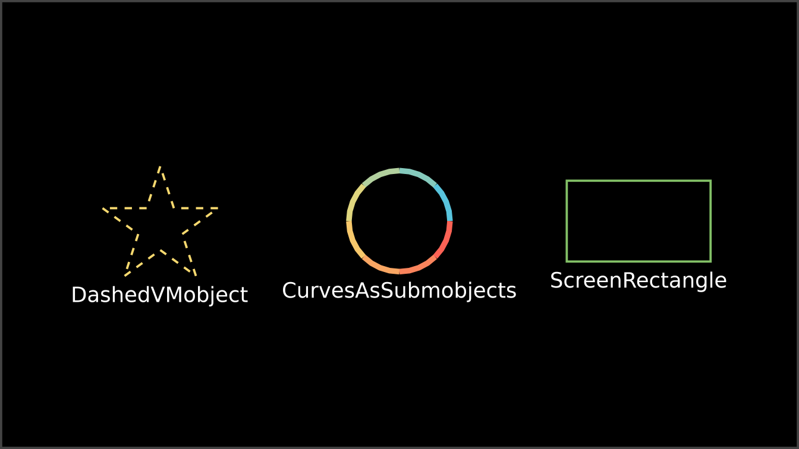
The manim banner
ManimBanner() draws manim’s logo; create()
and expand() return its two animations.
Banner <- R6::R6Class("Banner", inherit = Scene,
public = list(construct = function() {
banner <- ManimBanner()$scale(0.8)
self$play(banner$create())
self$play(banner$expand())
self$wait(0.5)
})
)Building a VMobject from points
Any path can be drawn by setting the points of a
VMobject() yourself.
-
set_points_as_corners(points)joins the points with straight segments. -
set_points_smoothly(points)passes a smooth spline through them. -
start_new_path(point)starts a (new) piece at a point;add_line_to(),add_cubic_bezier_curve_to(handle1, handle2, anchor),add_quadratic_bezier_curve_to(handle, anchor)andadd_smooth_curve_to(point)continue it;close_path()closes it. -
make_smooth()andmake_jagged()change all corners at once, andset_points()orappend_points()take raw Bezier control points.
zigzag <- rbind(c(-1.5, -1, 0), c(-0.75, 1, 0), c(0, -1, 0), c(0.75, 1, 0), c(1.5, -1, 0))
corners <- VMobject(color = BLUE)$set_points_as_corners(zigzag)
smooth <- VMobject(color = GREEN)$set_points_smoothly(zigzag)
drawn <- VMobject(color = YELLOW, fill_opacity = 0.3)
drawn$start_new_path(c(-1.5, -1, 0))
drawn$add_line_to(c(-1.5, 0.5, 0))
drawn$add_cubic_bezier_curve_to(c(-1, 1.5, 0), c(0, 1.5, 0), c(0.5, 0.5, 0))
drawn$add_quadratic_bezier_curve_to(c(1.5, 0.5, 0), c(1.5, -1, 0))
drawn$close_path()
two_pieces <- VMobject(color = RED)
two_pieces$start_new_path(c(-1.5, 0.5, 0))
two_pieces$add_smooth_curve_to(c(0, 1.2, 0))
two_pieces$add_smooth_curve_to(c(1.5, 0.5, 0))
two_pieces$start_new_path(c(-1.5, -0.8, 0))
two_pieces$add_line_to(c(1.5, -0.8, 0))
plot(catalog(list(
"set_points_as_corners" = corners,
"set_points_smoothly" = smooth,
"lines and curves" = drawn,
"start_new_path" = two_pieces
)))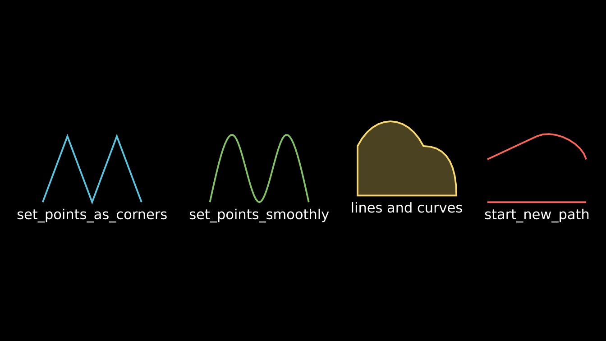
drawn$get_num_curves()
#> [1] 4
drawn$is_closed()
#> [1] TRUE
length(two_pieces$get_subpaths())
#> [1] 2A path can be animated like any built in shape. Create()
draws it along its points:
DrawSpiral <- R6::R6Class("DrawSpiral", inherit = Scene,
public = list(construct = function() {
t <- seq(0, 4 * PI, length.out = 120)
spiral <- VMobject(color = YELLOW, stroke_width = 6)
spiral$set_points_smoothly(cbind(0.25 * t * cos(t), 0.25 * t * sin(t), 0))
spiral$set_color(c(BLUE, YELLOW))
self$play(Create(spiral), run_time = 2)
})
)Making your own Mobject class
For a reusable shape, subclass a mobject class with R6. The usual
pattern is a class generator plus a constructor function, exactly as
manimR’s own shapes are built. Set your fields before calling
super$initialize(), because the parent initializer calls
generate_points().
Here is a VMobject whose points are generated from parameters, a rose curve:
RoseClass <- R6::R6Class("Rose", inherit = VMobjectClass,
public = list(
petals = 5,
radius = 1.5,
initialize = function(petals = 5, radius = 1.5, ...) {
self$petals <- petals
self$radius <- radius
super$initialize(...)
},
generate_points = function() {
t <- seq(0, TAU, length.out = 40 * self$petals)
r <- self$radius * cos(self$petals * t)
self$set_points_smoothly(cbind(r * cos(t), r * sin(t), 0))
}
)
)
Rose <- function(...) RoseClass$new(...)
rose <- Rose(petals = 5, color = PINK, fill_opacity = 0.4)
class(rose)
#> [1] "Rose" "VMobject" "Mobject" "R6"And a group subclass that assembles other mobjects, a labeled pie chart. Its methods are available like any other, and it scales, moves and animates as one mobject:
PieChartClass <- R6::R6Class("PieChart", inherit = VGroupClass,
public = list(
values = NULL,
initialize = function(values, colors = NULL, radius = 1.5, ...) {
super$initialize(...)
self$values <- values
colors <- colors %||% color_gradient(c(BLUE, GREEN, YELLOW, RED), length(values))
angles <- TAU * values / sum(values)
starts <- cumsum(c(0, angles))[seq_along(values)]
for (i in seq_along(values)) {
self$add(Sector(radius = radius, start_angle = starts[i], angle = angles[i],
color = colors[i], fill_opacity = 1, stroke_width = 2, stroke_color = BLACK))
}
},
share = function(i) self$values[i] / sum(self$values)
)
)
PieChart <- function(...) PieChartClass$new(...)
pie <- PieChart(c(3, 2, 4, 1))
length(pie)
#> [1] 4
pie$share(3)
#> [1] 0.4
plot(VGroup(rose, pie)$arrange(RIGHT, buff = 1.5))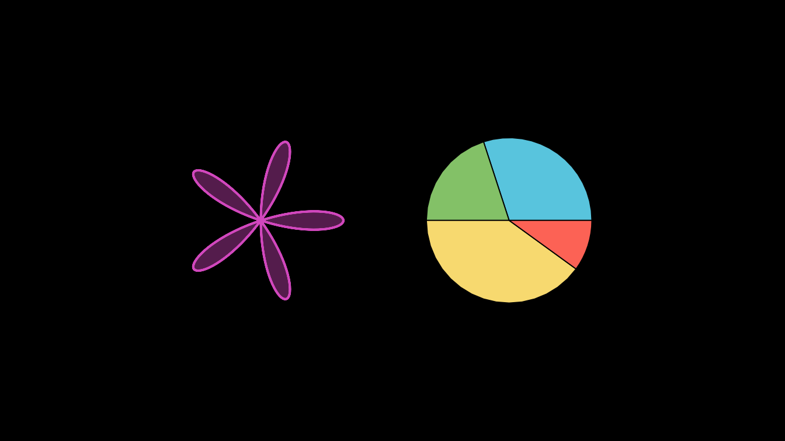
Subclasses take part in everything shown in this vignette: positioning, styling, copying, grouping and every animation.